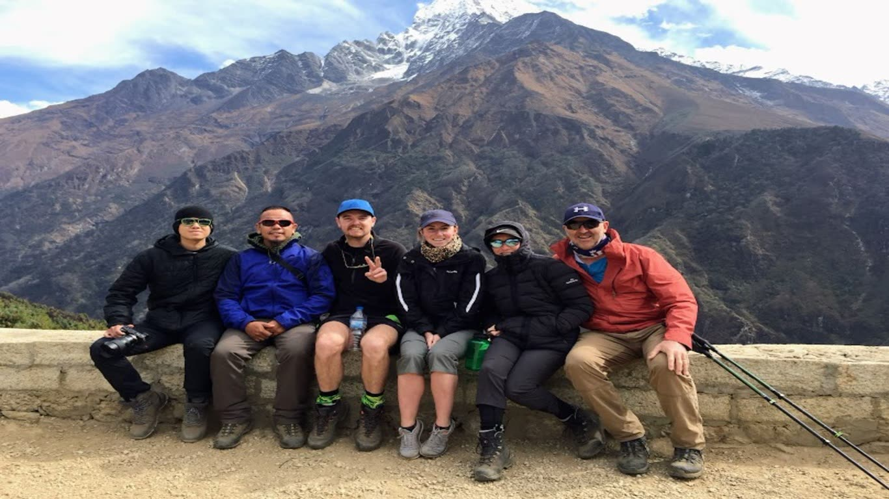
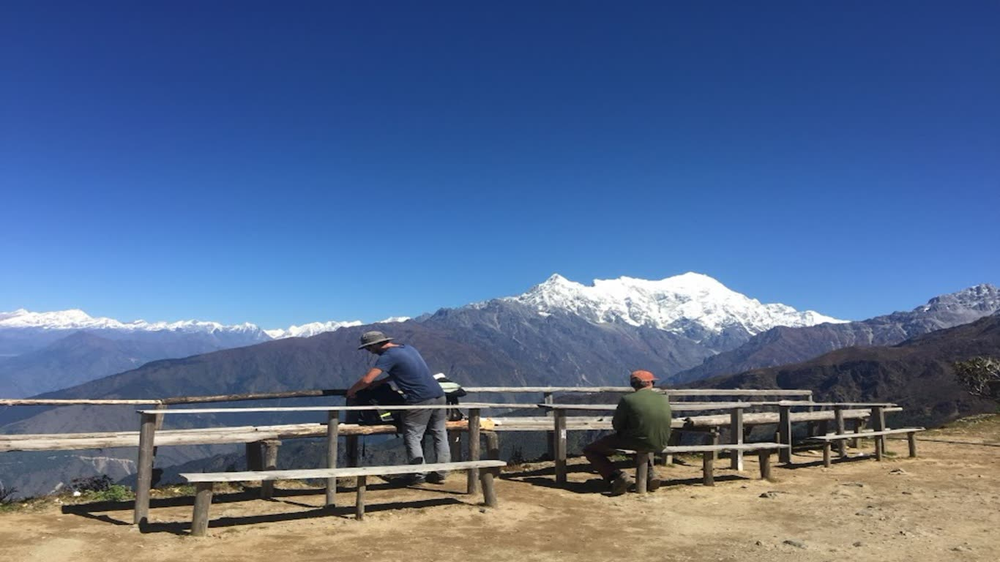
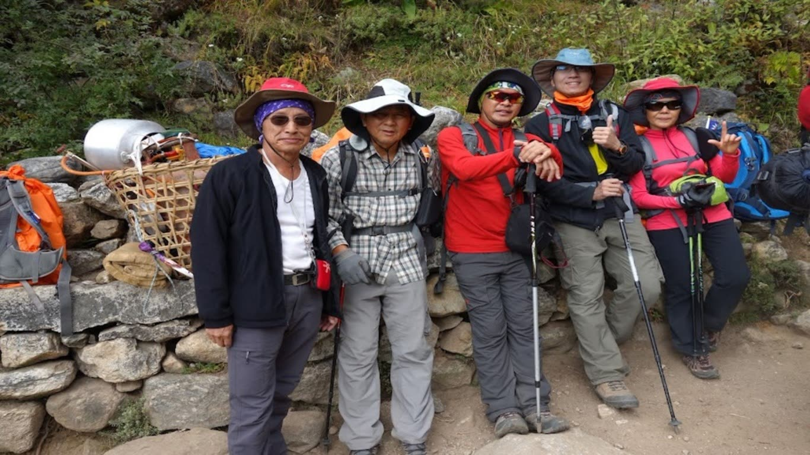
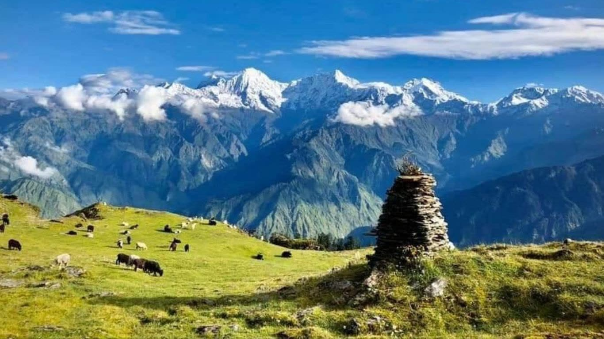
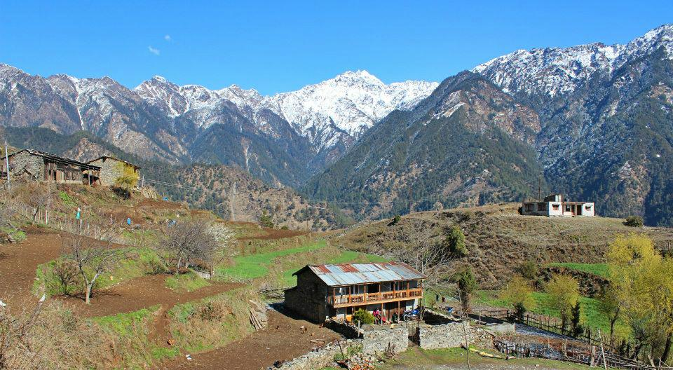
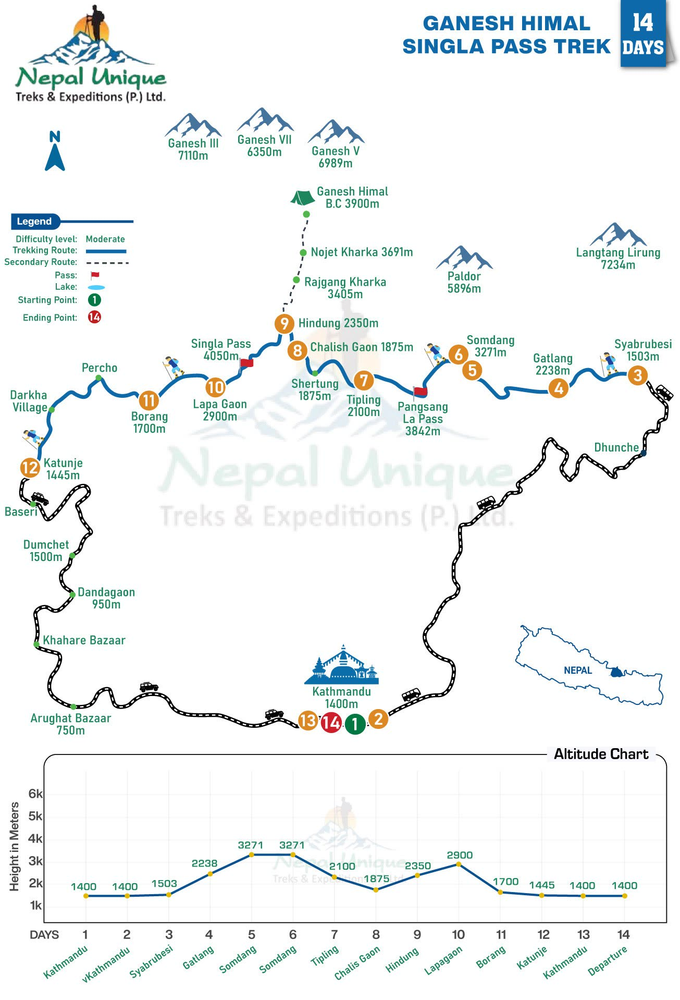

Ganesh Himal Singla Pass Trek
of Ganesh Himal Singla Pass Trek The Ganesh Himal Singla Pass is less crowded trekking trails of Nepal, and the Ganesh Himal region will offer us a great view of the surroundings, including the high peaks and the marvelous presence of the green forest along the trekking trail. The Ganesh Himal Singlha Pass trekking trail is one of the best in the central part of Nepal, as it passes through the Singlha Pass at an altitude of 4,050 m above sea level.





Key Trip Facts
Trek Overview
Trip Highlights
Overview of Ganesh Himal Singla Pass Trek
The Ganesh Himal Singla Pass is less crowded trekking trails of Nepal, and the Ganesh Himal region will offer us a great view of the surroundings, including the high peaks and the marvelous presence of the green forest along the trekking trail. The Ganesh Himal Singlha Pass trekking trail is one of the best in the central part of Nepal, as it passes through the Singlha Pass at an altitude of 4,050 m above sea level. The fantastic view that the trekkers can view from the Singla pass is surely the most mesmerizing view of all the regions.
The trek towards the Ganesh Himal through the Singla pass will provide a great experience for the trekkers. The trekkers will surely enjoy the trek through the remote area, viewing the wonderful view of surroundings. Trekking through the beautiful and traditional villages of the Tamang and Gurung communities, which are completely untouched by modernization, will surely be interesting.
Thus, while trekking towards the base camp of the Ganesh Himal, we can explore more about the local people and their lifestyles. The marvelous view of the Ganesh Himal along with Annapurna, Langtang, Manaslu, and other beautiful and highest peaks of the region is surely mesmerizing to watch and enjoy.
Nepal Unique Treks is arranging the process to have trekking at Ganesh Himal and Singla Pass according to the wishes of the tourists. The better arrangement of the tourist guides having proper knowledge about the places will always provide more entertainment to the visitors. They will provide lots of information to them while trekking towards the Ganesh Himal Singla pass trek.
Introduction to Ganesh Himal Region
The Ganesh Himal region lies northwest of Kathmandu, close to the Tibet border, and is named after Mount Ganesh (Ganesh I – 7,422 m). This less-explored region is known for dramatic mountain views, terraced farmland, deep valleys, and untouched forests. Trekking in Ganesh Himal offers a true wilderness experience combined with rich cultural encounters.
Why Choose the Singla Pass Trek in Nepal
The Singla Pass (4,050 m) trek is ideal for trekkers who want solitude, adventure, and raw Himalayan beauty. Unlike popular routes such as Everest or Annapurna, this trail sees very few trekkers, making it perfect for photographers, nature lovers, and experienced hikers seeking an authentic Nepal trekking experience.
Trek Highlights and Unique Experiences
Crossing the scenic Singla Pass with panoramic Himalayan views
- Close-up views of Ganesh Himal, Langtang, and Manaslu ranges
- Traditional Tamang and Gurung villages
- Remote trails, alpine meadows, and rhododendron forests
- Cultural immersion through homestays and local hospitality
Ganesh Himal Singla Pass Trek Route Details
Trek Starting and Ending Points
The trek usually starts from Syabrubesi or the Dhading side after a drive from Kathmandu and ends in Besi Sahar or the Trishuli area, depending on the itinerary. The route connects remote villages before crossing the Singla Pass into the Manaslu or Annapurna region.
Major Villages and Settlements on the Route
Key villages along the trail include Chawatar, Gatlang, Somdang, Tipling, and Lapa Gaon. These settlements are primarily inhabited by Tamang communities, where traditional stone houses, prayer flags, and monasteries reflect Himalayan culture.
Singla Pass Elevation and Scenic Views
At 4,050 meters, Singla Pass is the highest point of the trek. From the top, trekkers enjoy breathtaking views of Ganesh Himal peaks, Langtang Lirung, Manaslu, and surrounding valleys, making the challenging ascent truly rewarding.
Ganesh Himal Singla Pass Trek Itinerary Outline
Typical Trek Duration and Daily Walking Hours
The Ganesh Himal Singla Pass Trek typically takes 12–16 days, with daily walking hours ranging from 5 to 7 hours. The itinerary is designed to balance adventure, acclimatization, and cultural exploration.
Acclimatization and Rest Days
Although the trek is not extremely high in altitude, proper acclimatization days are included, especially before crossing Singla Pass. These rest days help trekkers adjust safely and enjoy the surrounding landscapes.
Side Trips and Exploration Options
Optional side trips include visits to Somdang mining area, alpine pastures, hidden monasteries, and nearby ridges for sunrise and sunset views. These additions enhance the overall trekking experience.
Ganesh Himal Singla Pass Trek Difficulty and Fitness Level
Trail Conditions and Altitude Challenges
The trek is considered moderate to challenging, with steep ascents, narrow trails, and limited facilities in remote areas. The Singla Pass crossing can be physically demanding, especially in snowy conditions.
Required Physical Fitness and Trekking Experience
Trekkers should have good physical fitness and some prior trekking experience. Regular hiking, cardio training, and mental preparedness are recommended before joining this trek.
Suitable Trekking Seasons for Singla Pass
Spring and autumn offer the most stable weather and best trail conditions, making them ideal for safely crossing Singla Pass.
Best Time to Trek Ganesh Himal Singla Pass
Spring Season (March–May)
Spring brings blooming rhododendron forests, clear skies, and pleasant temperatures. This season is perfect for nature lovers and photographers.
Autumn Season (September–November)
Autumn is the best time for the Ganesh Himal Singla Pass Trek, with crystal-clear mountain views, dry trails, and comfortable weather conditions.
Winter and Monsoon Considerations
Winter trekking is possible but challenging due to snow on the pass, while the monsoon season brings rain, leeches, and limited visibility. These seasons are recommended only for experienced trekkers.
Culture, Lifestyle, and Local Communities
Tamang and Gurung Cultural Experience
The region is home to the Tamang and Gurung ethnic communities, known for their warm hospitality, traditional dress, and unique customs influenced by Tibetan Buddhism.
Local Monasteries, Festivals, and Traditions
Trekkers encounter ancient monasteries, mani walls, prayer wheels, and colorful festivals that reflect the spiritual life of the Himalayan people.
Rural Mountain Lifestyle in Ganesh Himal
Life in Ganesh Himal villages revolves around farming, livestock, and seasonal trade. Staying in local homes offers insight into a simple, sustainable mountain lifestyle.
Flora, Fauna, and Natural Environment
Forests, Rhododendrons, and Alpine Landscape
The trail passes through dense oak, pine, bamboo, and rhododendron forests, gradually opening into alpine meadows and high-altitude terrain.
Wildlife Found in Ganesh Himal Area
Wildlife sightings may include langurs, musk deer, Himalayan thar, and various bird species, making the trek appealing to nature enthusiasts.
Conservation and Responsible Trekking
Responsible trekking practices help preserve the fragile ecosystem. Nepal Unique Treks promotes eco-friendly travel and supports local conservation efforts.
Accommodation and Food During the Trek
Tea House and Homestay Accommodation
Accommodation consists mainly of basic tea houses and community homestays, offering clean rooms and authentic local experiences.
Local Nepali Meals and Trekking Food
Meals include dal bhat, noodles, rice, potatoes, soups, and local bread, providing sufficient energy for trekking days.
Drinking Water and Hygiene Practices
Boiled or purified water is recommended. Trekkers are encouraged to use reusable bottles to reduce plastic waste.
Permits and Trekking Regulations
Required Trekking Permits
Trekkers need a TIMS card and relevant local permits depending on the route connection with the Manaslu or Langtang regions.
Restricted Area Rules and Guidelines
Some sections may fall under restricted zones, requiring licensed guides and special permits, which Nepal Unique Treks arranges.
Guide and Porter Arrangement
Hiring a local guide and porter enhances safety, navigation, and cultural understanding while supporting local employment.
Cost, Package Inclusions, and Exclusions
What Is Included in the Trek Package
Packages generally include permits, transportation, accommodation, meals during the trek, a guide, a porter, and insurance.
What Is Not Included
Personal expenses, travel insurance, drinks, tips, and extra services are usually excluded.
Custom and Private Trek Options
The Nepal Unique Treks offers customized and private Ganesh Himal Singla Pass Trek packages based on time, budget, and fitness level.
Why Trek Ganesh Himal Singla Pass with Nepal Unique Treks
Experienced Local Guides and Safety Standards
Our experienced local guides ensure safe navigation, altitude awareness, and meaningful cultural interaction throughout the trek.
Sustainable and Responsible Tourism Practices
Nepal Unique Treks is committed to sustainable tourism, supporting local communities, and minimizing environmental impact.
Booking Process and Customer Support
We provide easy booking, flexible itineraries, and 24/7 customer support to ensure a smooth and memorable trekking experience in Nepal.
Ganesh Himal Singla Pass Trek Itinerary: Day by Day
14 Days program for Ganesh Himal Singla Pass Trek. Daily timings and sequences remain flexible according to weather, flight operations, and group pace.
Day 1: Day 01: Arrival at Tribhuvan International Airport, Kathmandu (1,400 m)
Approx. 1,400 m / 4,593 ft
Upon arrival at Tribhuvan International Airport, our representative from Nepal Unique Treks welcomes you and transfers you to your hotel in Kathmandu. After check-in, you can relax or explore the lively streets of Thamel, known for trekking shops and a cultural atmosphere. In the evening, there will be a short briefing about the Ganesh Himal Singla Pass Trek itinerary, permits, and safety guidelines.
Day 2: Kathmandu Valley Sightseeing & Trek Preparation (1,400 m)
Approx. 1,400 m / 4,593 ft
Today is dedicated to sightseeing in the Kathmandu Valley, visiting UNESCO World Heritage Sites such as Swayambhunath (Monkey Temple), Pashupatinath Temple, Boudhanath Stupa, and Patan Durbar Square. This day also allows time for final trek preparation, gear checking, and permit arrangements. Overnight at a hotel in Kathmandu.
Day 3: Drive from Kathmandu to Syabrubesi (1,460 m) – 7–8 hours
Approx. 1,460 m / 4,790 ft
After breakfast, we drive northwest from Kathmandu to Syabrubesi, the gateway to the Ganesh Himal and Langtang regions. The scenic drive follows rivers, terraced hills, and traditional villages. Although the journey is long, it offers beautiful countryside views. Overnight at a local lodge.
Day 4: Trek from Syabrubesi to Gatlang (2,238 m), 9 km, and 5/6 hrs
Approx. 2,238 m / 7,343 ft
The trek begins with a steady ascent through forests and traditional Tamang settlements. Gatlang is a beautiful Tamang village with stone houses and Buddhist culture. From here, you can enjoy views of the surrounding hills and distant Himalayan peaks. Overnight at a community lodge or homestay.
Day 5: Trek from Gatlang to Somdang (3,270 m), 10 km, 6/7 hrs
Approx. 3,270 m / 10,728 ft
Today’s trail passes through alpine forests, pastures, and yak grazing areas. We cross scenic ridges and reach Somdang, a remote village once known for its old mining area. The increasing altitude makes the walk more challenging, but the peaceful surroundings make it rewarding.
Day 6: Acclimatization Day at Somdang (3,270 m)
Approx. 3,270 m / 10,728 ft
This rest and acclimatization day helps your body adjust to altitude before crossing the high pass. Short hikes around Somdang offer great views of Ganesh Himal peaks and nearby valleys. You can explore the local lifestyle and enjoy the quiet mountain environment.
Day 7: Trek from Somdang to Tipling (2,100 m), 8 km, 5 hrs
Approx. 2,100 m / 6,890 ft
The trail descends through forests and traditional farmland to Tipling village, one of the most culturally rich villages in the Ganesh Himal region. Here, you experience authentic Tamang culture, traditional houses, and warm local hospitality.
Day 8: Trek from Tipling to Chalish Gaon (1,875 m), 6 km, 5 hrs
Approx. 1,875 m / 6,152 ft
A relatively short and easy trekking day, passing terraced fields, suspension bridges, and small settlements. Chalish Gaon is a quiet village where trekkers can enjoy local food and rural mountain life.
Day 9: Trek from Chalish Gaon to Hindung (2,350 m), 8 km, 5/6 hrs
Approx. 2,350 m / 7,710 ft
The trail gradually climbs through forests and ridges with views of the surrounding hills. Hindung is a scenic village located beneath Singla Pass, making it an important stop before the high-pass crossing.
Day 10: Trek from Hindung to Singla Pass (4,050 m) and Descend to Lapa Gaon (2,900 m), 12 km, 7/8 hrs
Approx. 2,900 m / 9,514 ft
This is the most challenging and rewarding day of the trek. The ascent to Singla Pass (4,050 m) is steep but offers breathtaking panoramic views of Ganesh Himal, Langtang Lirung, and Manaslu ranges. After enjoying the views, we descend carefully to Lapa Gaon for an overnight stay.
Day 11: Trek from Lapa Gaon to Borang (1,700 m), 9 km, 6 hrs
Approx. 1,700 m / 5,577 ft
Descending through forested trails and farmlands, we reach Borang village, known for its mixed ethnic communities and peaceful setting. This day allows the body to recover after the high pass crossing.
Day 12: Trek from Borang to Katunje Village 1150 m, 60 km, 4 hrs
Approx. 1,150 m / 3,773 ft
After breakfast at the tea house, we leave Borang Village and begin our scenic jeep drive to Katunje Village, passing through Lapang Khola, Charange Village, and the peaceful surroundings of Hulak Deurali Monastery. Upon arrival in Katunje, we enjoy lunch before taking a walk around the village to explore the traditional lifestyle of the local Newari community. We visit the government high school, where we distribute small items of school stationery and spend a joyful time with the children. In the afternoon, we take part in cultural activities organized by the Katunje Mother Community, sharing local traditions and enjoying singing and dancing together. The day concludes with a warm farewell dinner, followed by an overnight stay at Dil Dai ko Ghar Homestay, offering an authentic and memorable village experience.
Day 13: Katunje Village to Kathmandu 85 km, 4/5 hrs drive by local jeep
Approx. 1,400 m / 4,593 ft
After breakfast, we begin our scenic drive to Kathmandu via Samari Dada and Trishuli Bazaar, the headquarters of Nuwakot District. The journey follows the Pushpalal Highway, covering approximately 85 km and taking around 4–5 hours, including lunch and tea breaks along the way. Enjoy beautiful views of rolling hills, river valleys, and rural landscapes throughout the drive. Upon arrival in Kathmandu, check in to your hotel and take time to relax, freshen up, and rest to recover from the long journey and any travel fatigue. In the evening, Nepal Unique Treks warmly invites you to a farewell dinner, where we share trekking experiences and present a trek certificate or a small token of love as a memory of your adventure. Overnight stay at a comfortable three-star hotel in Thamel, Kathmandu.
Day 14: Departure from Kathmandu Nepal 1400 m,
Approx. 1,400 m / 4,593 ft
Today marks the end of your unforgettable journey in Nepal as you prepare to return home after a long and rewarding adventure. A Nepal Unique Treks guide or staff member will escort you to Tribhuvan International Airport approximately three hours before your scheduled flight, ensuring a smooth and comfortable departure. If you wish to extend your stay in Nepal for another trekking adventure or cultural tour, please feel free to contact Dil Gurung, who will be happy to organize your next journey and help you continue exploring the beauty of Nepal. We wish you a safe flight and hope to welcome you back again.
What is Included (Regular Package)
What is Excluded
Booking Dates & Availability
Packing List for Ganesh Himal Singla Pass Trek
Essential Info: Down jackets and sleeping bags can be rented/arranged per package inclusions.High-Altitude Trail Gear (6 items)
Cold-Weather Layering System (5 items)
Sleep, Health & Permits (3 items)
Read before you book: Ganesh Himal Singla Pass Trek
Practical logistics derived directly from this package's route facts, inclusions, and elevation profile.
Accommodation & Meals (Hotel, Lodge & Tea House)
Accommodation follows the package grade (Hotel, Lodge & Tea House) in Kathmandu and along the Langtang route. Check your package Includes section for included meals and Kathmandu hotel nights.
Permits & Local Logistics
Transportation is arranged via Local sharing Bus, jeep and private car. Applicable permits listed in the package inclusions are arranged by Nepal Unique Treks prior to departure.
Route Difficulty & Elevation (4,050 m)
Ganesh Himal Singla Pass Trek is rated Adventure with a maximum elevation of 4,050 m. Follow your guide's pacing and stay hydrated throughout the 14 Days itinerary.
Best Time to Visit (Autumn and Spring)
Recommended operating season on the source page: Autumn and Spring.
Altitude Profile of Ganesh Himal Singla Pass Trek
Weather on Ganesh Himal Singla Pass Trek
Ganesh Himal Singla Pass Trek Route Map

Book This Trek
Contact our Kathmandu coordinators using the booking panel for private or fixed-group departures.
Trip Feedback
Explore verified traveller stories or leave feedback on Nepal Unique Treks.
Visit Nepal Unique Treks